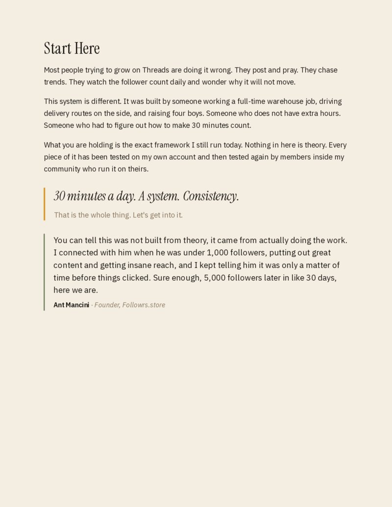
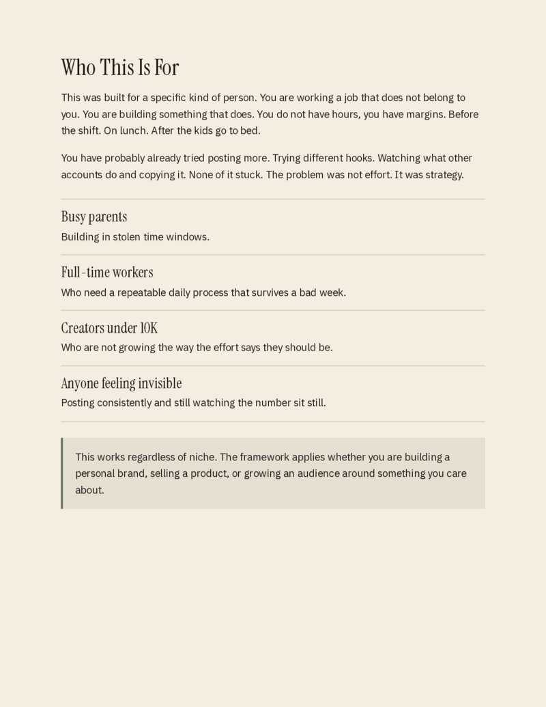
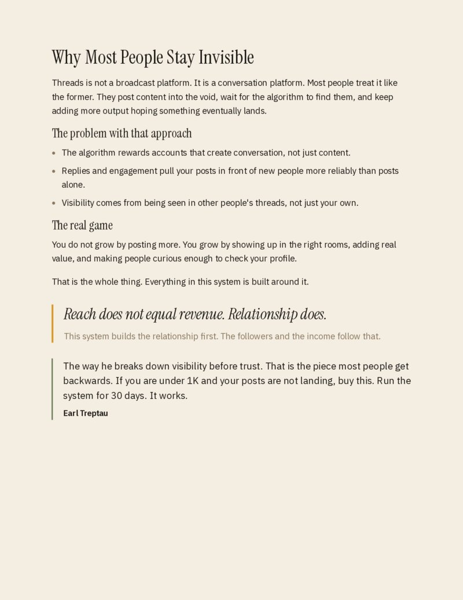
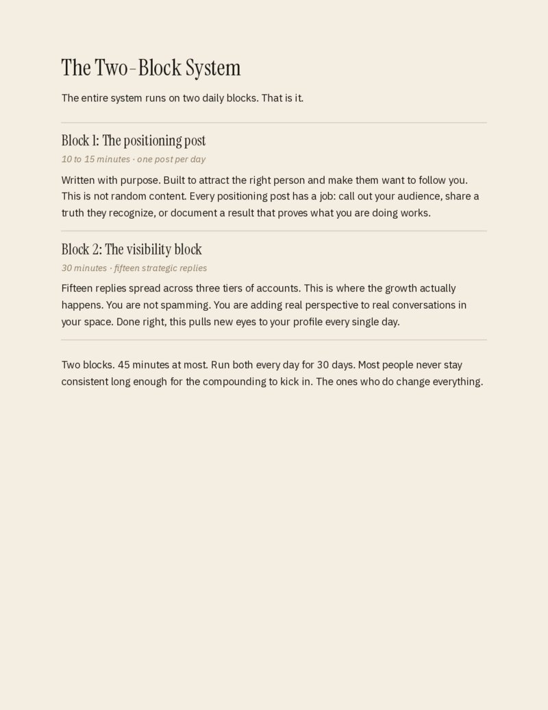
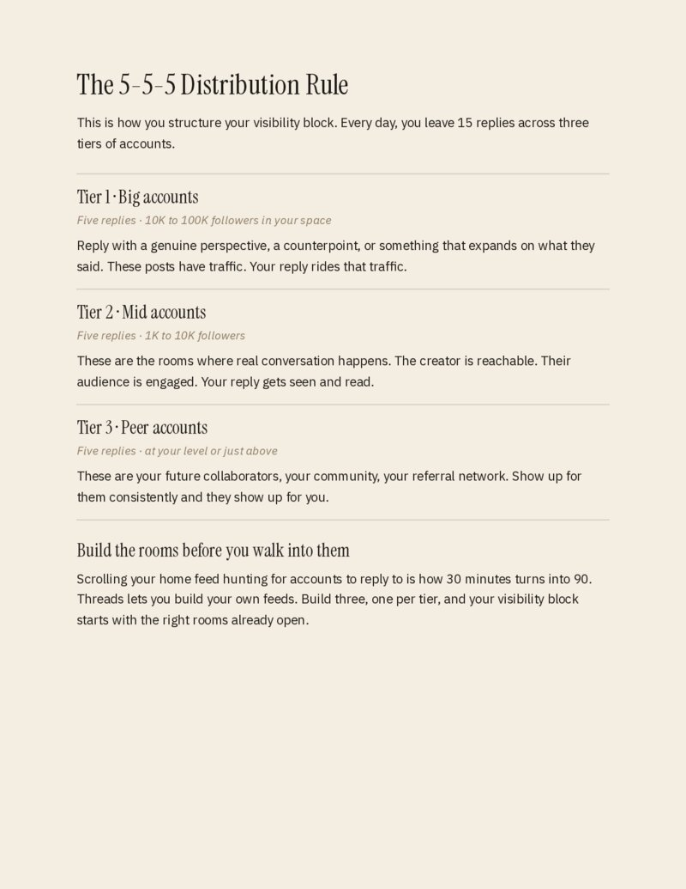
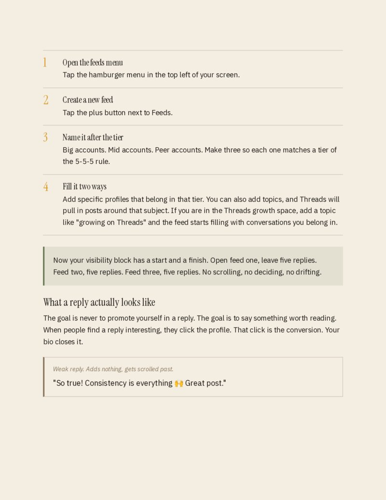
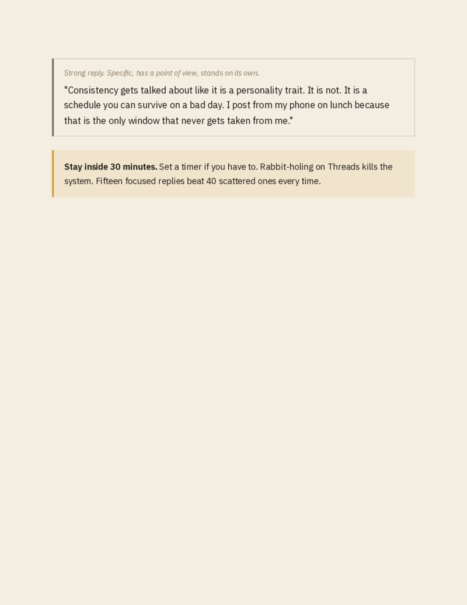
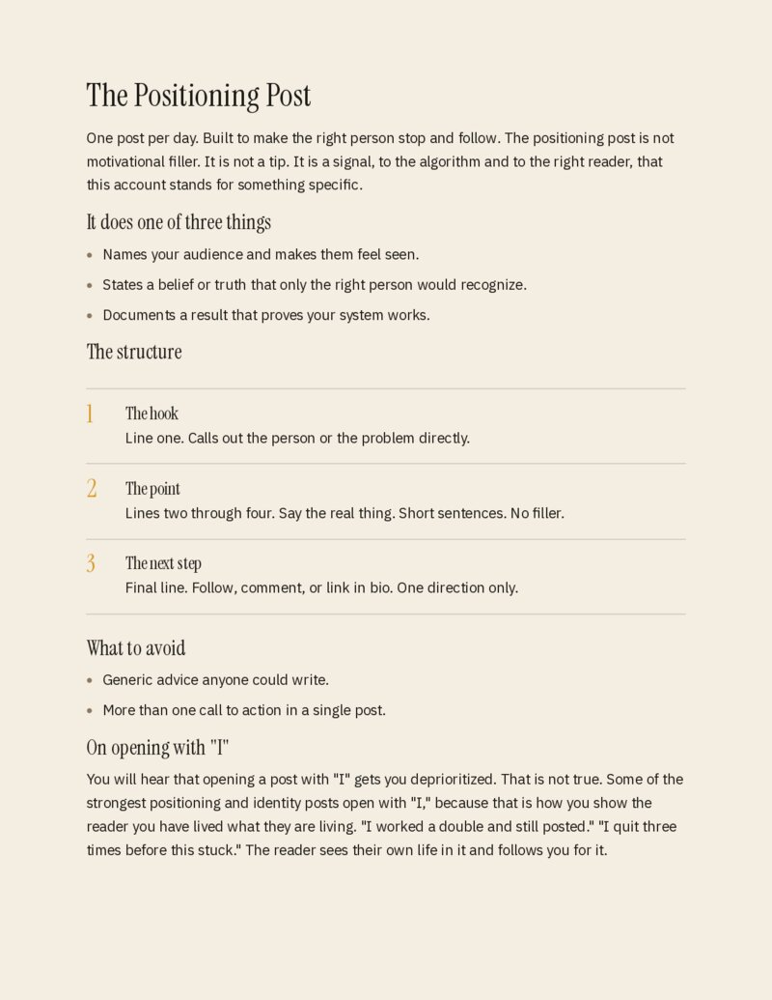
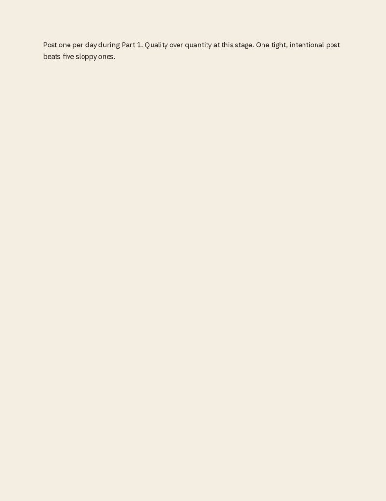

A Lunch Break Business is built in the gaps.
Not after you quit. Not once the schedule clears. In the 30 minutes you already have — lunch, before the shift, after the kids go down. I'm a full-time warehouse worker and dad of four. I grew 18,000+ followers on Threads doing exactly this. The Threads Playbook is the system I used to do it.
$27 $49
One payment. Instant download.
30 DAYS
- ZeroJoined Threads. Nothing carried over from Instagram.
- 10,000No engagement groups. No follow-for-follow.
- 18,000+Thirty minutes a day, around warehouse shifts and four boys.
You're not invisible because your content isn't good enough.
You're showing up. Posting consistently. Studying what the big creators are doing. Still nothing: no followers, no engagement, just your words disappearing into a feed that doesn't know you exist.
Meanwhile, people in your exact niche are blowing up and building businesses, and you're wondering what they're doing that you're not.
You're invisible because you don't have a visibility system.
You don't need another hook guide, and you don't need to post ten times a day. Threads rewards conversation and presence. The people growing fastest show up in the right places, in front of the right people, every day. That takes a system — not talent, time, or luck.
Two blocks. Thirty minutes. Every day.
The whole system runs on two daily blocks. Run both every day for 30 days, whenever your day has a gap: before you clock in, on lunch, after the kids are asleep.
The positioning post
Written to attract the right person and make them want to follow you. Every positioning post has one job: call out your audience, share a truth they recognize, or document a result that proves what you're doing works.
The visibility block
Fifteen replies, spread across three tiers of accounts. You're adding a real perspective to real conversations in your space, and every one puts new eyes on your profile.
A real perspective or a counterpoint. Your reply rides their traffic.
Where real conversation happens. The creator is reachable and your reply gets read.
Your future collaborators and referral network. Show up for them and they show up for you.
What busy people say after running it.
From 200 to over 1K in less than 4 weeks.
"I shifted from mostly posting to engaging in the comments and I started meeting people, making real connections. As a dad who works 10–12h/day, I needed something sustainable and that's exactly what you created."
Run the system for 30 days. It works.
"I've been building on Threads long enough to know what works. Cody's guide still gave me things worth using. The way he breaks down visibility before trust is the piece most people get backwards. If you're under 1K and your posts aren't landing, buy this."
Simple enough to execute on a lunch break.
"What he's put together isn't theory. It's a documented pattern that actually compounds. The visibility pyramid, the conversation loop, the 5-5-5 structure: observations he made, tested, and refined while working shifts and raising four boys. Deep enough to actually work."
It changed how I see Threads.
"I LOVE the 30-Minute Visibility System!! Especially when it comes to engagement. Cody really understands this app and the algorithm, and he knows how to skyrocket growth in 30 minutes a day. If you're building on Threads and something isn't clicking, Cody is the person to talk to!!!"
It fits around a busy job and family life.
"It's clear, well structured, and delivers exactly what's promised. It's been designed in a way that actually fits around a busy job and family life, which is rare. Cody has carved out a strong niche around replies, and it shows."
What's inside.
A PDF you open on your phone and run with immediately. No fluff. Every page has a job.









The full daily playbook: positioning posts, the visibility block, the 5-5-5 reply structure, and how to read your own data so you know exactly what's working.
A daily log that turns one month of execution into a pattern map you can actually use. You'll know what to double down on and what to drop.
The exact first-line structures that drive follows and replies — built for 9-to-5 workers with something real to say.
As the app changes, so does the playbook. You pay once, you get everything that comes after.
One payment. Instant download. Free updates. No subscriptions.
Who is this for?
Anyone building on Threads who isn't seeing the growth they expected. Specifically: 9-to-5 workers, parents, people with real jobs who can't post ten times a day. If you have 30 minutes and something worth saying, this system was built for you.
Do I need an existing audience?
No. I started this account from zero in December 2025 with nothing carrying over from Instagram. The system works because it's built around showing up in the right conversations — not broadcasting to an audience you already have.
What if I don't have 30 minutes every day?
The 30 minutes doesn't have to be a block. Monday might be five minutes at breakfast and twenty-five on lunch. The card says "whenever it fits" because that's the actual requirement. Consistency beats perfection here.
Is this just for Threads?
The specific playbook is built for Threads — the reply tiers, the algorithm behavior, the way positioning posts land on this platform. The underlying principles (visibility before trust, show up for others first) work anywhere, but the execution details are Threads-specific.
What's the refund policy?
Run the system for 30 days. If you do the work and see nothing, I'll refund it. The system only fails if you don't run it.
Clock in.
Build something.
30 days from now, you'll know exactly what works. Or you'll keep wondering why nothing is.